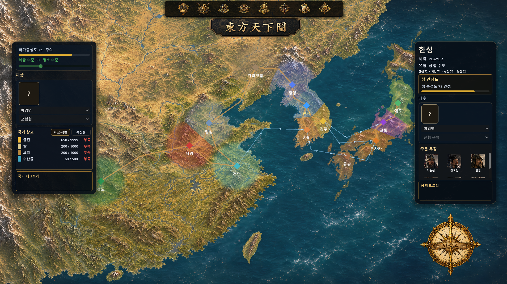
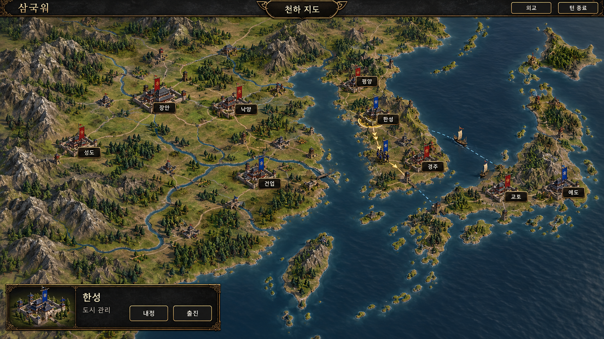
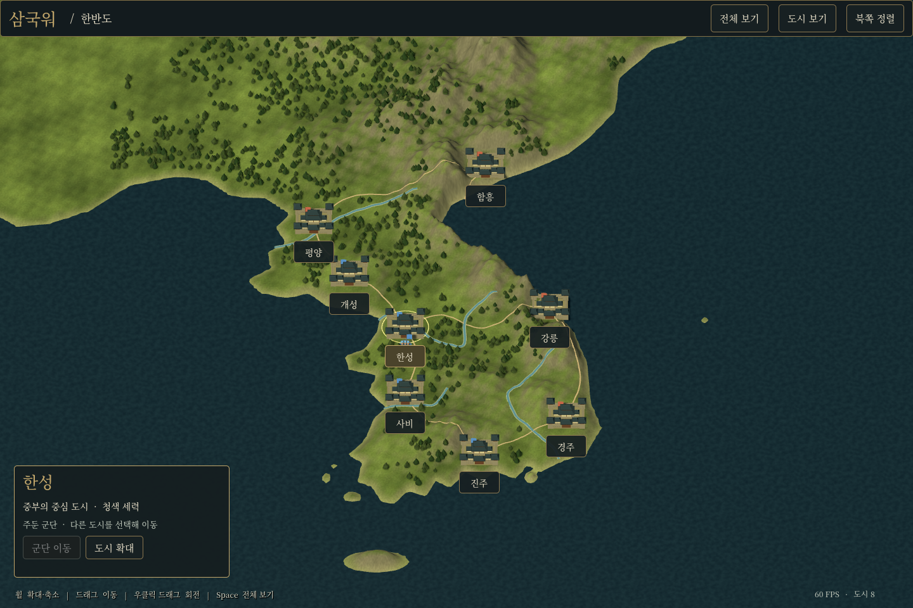
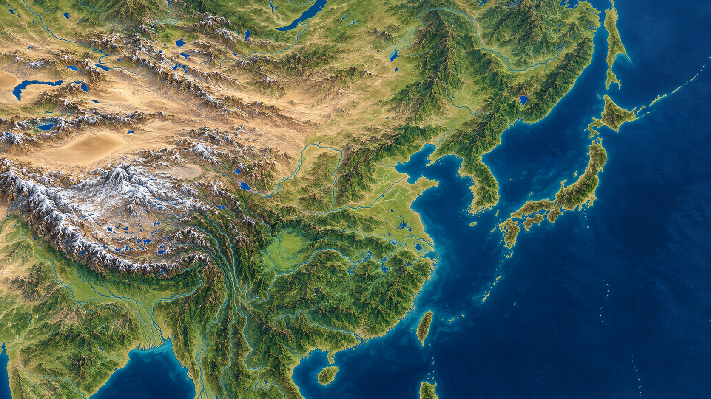
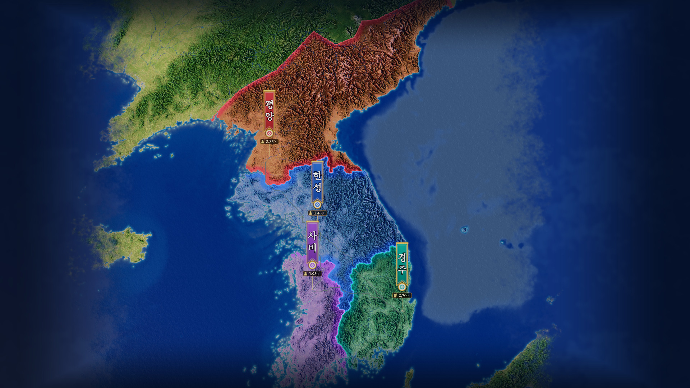
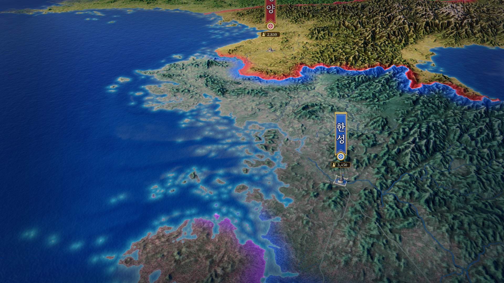
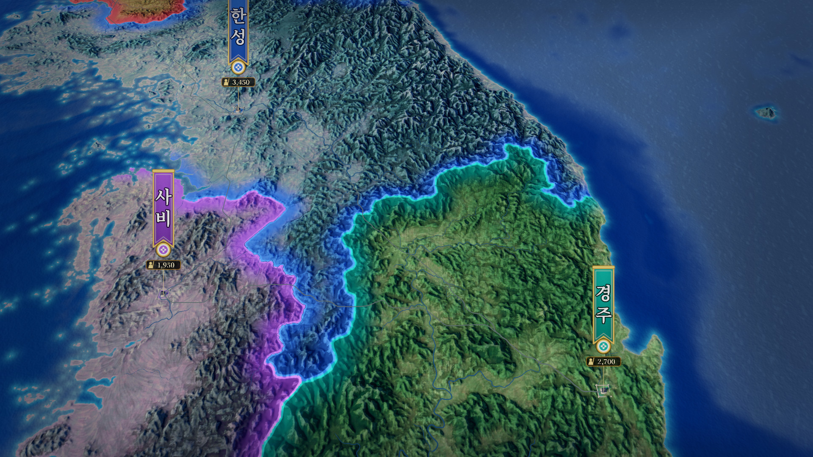
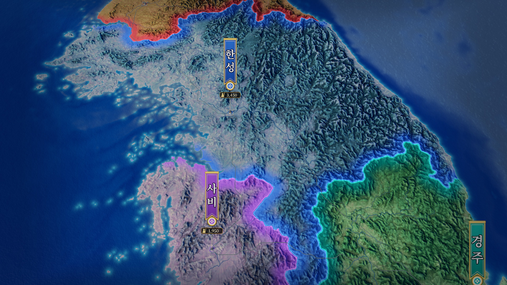

The World Map I Dreamed of Takes Shape
More than two hours in QUORUM: a 3D Korean Peninsula prototype built from Grok Coach’s proposal
October 30, 2026 · Building EASTWAR’s 3D world mapUntil yesterday, I had been working on the soldiers that would move across EASTWAR’s battlefields. Today, I turned to the world those battles would take place in. The existing world map, titled “東方天下圖,” was a 2D illustration of East Asia. Cities appeared as points, with colored circles marking faction territory. I liked the painting, but wanted a stronger sense of raised terrain and land that could actually be held. EASTWAR’s project name is 삼국WAR.


More than two hours spent finding the right map
That evening, I brought Claude Coach, ChatCoach, Gemini Coach and Grok Coach into QUORUM to discuss the redesign. Our meeting with Claude, ChatGPT, Gemini and Grok lasted more than two hours. We kept comparing not only what the tools could produce, but also what kind of map I wanted to see in this game.
ChatCoach’s illustration-led proposal made its castles and mountains easy to read, but to me it felt too much like a playful mobile game. A separate, simplified 3D attempt also fell short of the quality I wanted to release. I chose neither. Simply making the map three-dimensional was not enough.




Grok Coach’s proposal: start with real elevation
Grok Coach’s proposal changed our direction. Rather than drawing mountains one by one, we would use real elevation data to build the terrain, then give it a painterly surface. The Korean Peninsula test used the SRTM15+ elevation dataset. Taking the broad structure of mountains and plains from real terrain gave us a different starting point from arranging repeated mountain shapes.
This introduced the idea of baking the colors: storing colors and surface detail calculated from the terrain in a texture. It offered a way to use real landforms while still giving the screen the painted atmosphere I wanted. The focus shifted toward how to bring out the shape of the land.


We decided not to paint castles, flags or labels into the background. The terrain would remain separate, with those game elements placed on top in Godot. That would let us change a flag when a castle fell or update a marker as a city developed. Instead of circular territory indicators, faction colors would cover entire regions while preserving the terrain’s light and dark detail.
From a promising image to a usable game structure
The first version put the Korean Peninsula terrain into a Godot 4.6 scene and connected territory colors, flag markers and city data in JSON. When I first saw it, my reaction was, “This looks fantastic!!!” It gave me a reason to keep developing this approach.
In the second version, we softened the color inside territories and strengthened the borders. We added detail textures for closer views and baked the terrain colors again for a more painterly finish. I also chose to prioritize a smooth, attractive map at normal play distances rather than keep spending resources on extreme close-ups.
For the third version, we organized how the map would connect to the game rules. Each region was linked to one city ID, so capturing its castle would change the ownership color of the whole region. Borders were a point I specifically clarified: regions within the same faction should keep thin dividing lines, while borders between different factions should be thick. That distinction should update whenever ownership changes.
I said the city markers did not have to sit at exact real-world coordinates. Consistency across the map and readability during play mattered more. We therefore separated marker positions from region boundaries, and kept map dimensions, height, zoom limits, region maps and rules data in separate configuration files. We also chose to gently flatten the terrain around castles where needed.
It was also important not to rewrite the shader that draws the colors every time we added regions. The implementation uses a replaceable region-map texture and color lookup table; the work record reports a test with 13 dummy regions. We used the same Forward+ renderer as the main project, made the 120 km minimum zoom setting configurable, and included a performance measurement tool.
The revisions were not all smooth. In the first v3, the territory colors covered the terrain with a plastic-like finish, and the sea became darker. Improving the structure had cost us the look we liked. Version v3.1 restored v2’s brightness-preserving color treatment and sea settings. It also passed the five acceptance tests organized by Claude Coach, and I ran the result myself.






Testing the Korean Peninsula prototype on my PC
Claude Code measured performance on my PC. With a GTX 1660 at 1080p, the heaviest close-up view averaged 154 FPS, with a 1% low metric of 142 FPS. The distant view ran at about 240 FPS, and the test reported zero errors. The close-up average was more than 2.5 times our 60 FPS target.
These figures belong to this Korean Peninsula test scene. I am not extending them into a performance claim for the full East Asian map with the existing HUD and other game elements attached. Total VRAM usage was recorded at 578 MB, while the map itself was estimated at roughly 70–90 MB. That estimate is not an isolated measurement of the map, so the total and the estimate need to stay distinct. Texture compression also remains an optimization option.
I made the final choice after running the scene myself with F6. My reaction was, “Amazing! Wow!!! This is incredible!” followed by, “This really is the world map I dreamed of!” The Korean Peninsula prototype was what I accepted today. I decided to use its look as the reference for building the full world map.


Next, the whole of East Asia
We also began extending the approach tested on the peninsula to the whole of East Asia. Using ETOPO 2022 elevation data, we compared four layout options with 46 dummy castles: 30 in China, 8 on the Korean Peninsula and 8 in Japan. I rejected ChatCoach’s proposal to make China, Korea and Japan similar in size because it looked too toy-like to me.
Instead, I chose a layout that retains the broad shape of the real terrain while smoothly expanding the Korean Peninsula and Japan by 1.3 times toward the surrounding sea. The work record says position changes on the China side were limited to 1 km or less. The aim is to preserve the continent’s scale while giving Korea and Japan more playable space. I also asked for stronger mountain relief. The full East Asian map and its baked textures are now being produced in that direction.
For November, we decided to activate the 12 regions already present in the 2D MVP: four on the Korean Peninsula, four in Japan and four in China. Moving their castle and general data onto the new map comes first. We are designing the map for roughly 50 castles from the outset, with the goal of adding the planned castles and all generals by December.
Bringing both battlefield and world into 3D
Next, I want to place the existing HUD over the 3D map and connect the effects needed for turns and territorial conquest. Ideas include ownership color spreading inward from a border, army movement and changing flags. I also want seasons with snow accumulating first on high mountains, along with moving clouds that cast shadows.
I am also planning for visible shops, barracks and farmland as cities develop, with their castle markers growing on the world map. Creating castle models in Tripo and starting with capitals is another option to examine. These are plans to build on the accepted map, not features completed today.
In today’s QUORUM meeting, I set aside proposals that did not fit and changed direction through another coach’s idea. Grok Coach proposed starting from real elevation data, Claude Coach reviewed the acceptance conditions, and Claude Code measured the result in Godot. I looked at the screen and decided what needed changing and which version to adopt. More than two hours of discussion led to the Korean Peninsula prototype I wanted.
Following the 3D battlefield work through yesterday, today laid the foundation for a 3D world map. The full East Asian map and integration into the game still lie ahead. But the world map I had dreamed of appeared on screen for the first time, and I now have a clear reference for what to build next.